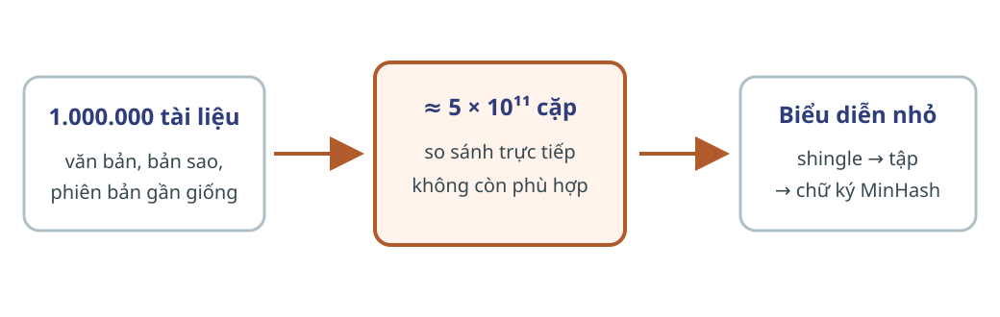
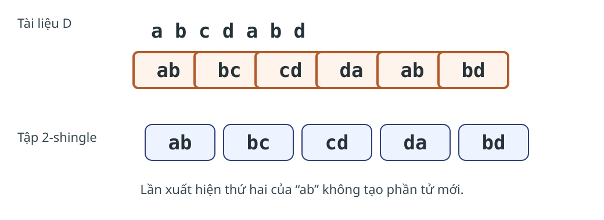
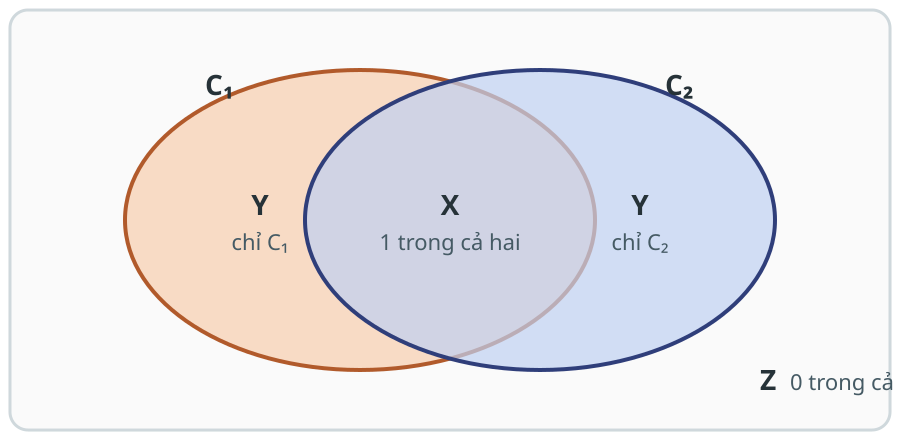
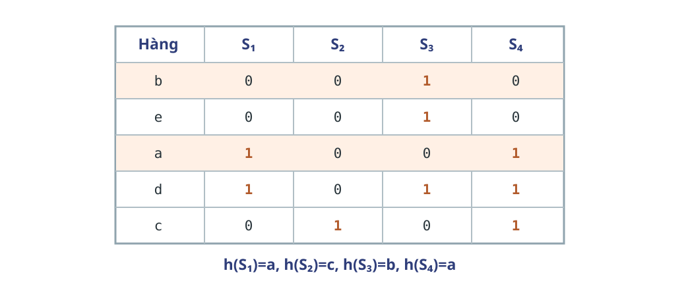
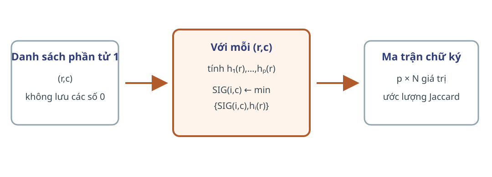

Năm học 2026–2027 · Học kỳ 1
Trường Đại học Công nghệ · Đại học Quốc gia Hà Nội
Tiên quyết: tập hợp, xác suất cơ bản, hàm băm và ma trận thưa.

$N$ tài liệu; tổng độ dài $L$ byte.
Mỗi tài liệu có một biểu diễn nhỏ, giữ tương đồng từ vựng.
Bài này chưa duyệt $\Theta(N^2)$ cặp.
$J(C_1,C_2)$ và tỷ lệ hàng chữ ký trùng là phép so sánh hai biểu diễn.
Đoạn văn giống nhau tạo phần tử chung.
Phần chung được chuẩn hóa theo phần xuất hiện.
Một phép thử ngẫu nhiên giữ xác suất của tỷ lệ đó.
Các đoạn con chung giữ dấu vết của cụm từ chung, kể cả khi nằm ở vị trí khác nhau.
“touch down” và “touchdown” trở nên giống nhau nếu xóa khoảng trắng.

Chuỗi byte $D$ dài $n$; $k\ge1$.
$S_k(D)=\{D[i:i+k]\mid0\le i\le n-k\}$ nếu $k\le n$.
$S_k(D)=\varnothing$ nếu $k>n$.
Tập chỉ giữ một bản của mỗi đoạn con.
đầu vào: D[0..n−1], k ≥ 1
C ← tập rỗng
nếu k > n thì trả C
cho i = 0,…,n−k:
thêm D[i:i+k] vào C
trả C
Bất biến: trước vòng $i$, $C$ chứa đúng các shingle bắt đầu trước $i$.
Dừng: sau $n-k+1$ cửa sổ, mọi vị trí hợp lệ đã được xét.
Tạo hoặc băm trực tiếp: $\Theta(1+k\max(0,n-k+1))$ thời gian; bộ nhớ theo số shingle phân biệt.
Tài liệu không liên quan vẫn chia sẻ nhiều shingle.
Đoạn chung mang nhiều ngữ cảnh hơn.
$|S_k(D)|\le\max(0,n-k+1)$
Tạo 9-shingle để có sức phân biệt.
Băm 9-shingle về số nguyên 32 bit.
Va chạm có thể nhập hai shingle khác nhau.

$x=|C_1\cap C_2|,\quad y=|C_1\triangle C_2|$
$|S\cap T|=3$
$|S\cup T|=8$
$3/8$
$J(C_1,C_2)=\frac{|C_1\cap C_2|}{|C_1\cup C_2|}=\frac{x}{x+y}$
đầu vào: C₁,C₂ tăng dần, không lặp
(i,j,giao,hợp) ← (0,0,0,0)
trong khi i<|C₁| và j<|C₂|:
nếu C₁[i]=C₂[j]: tăng i,j,giao,hợp
ngược lại nếu C₁[i]<C₂[j]: tăng i,hợp
ngược lại: tăng j,hợp
cộng phần tử còn lại vào hợp
trả giao/hợp nếu hợp>0; nếu không, trả “không xác định”
Thời gian trường hợp xấu nhất $\Theta(|C_1|+|C_2|)$; bộ nhớ phụ $O(1)$.
Tuyến tính theo tổng kích thước hai tập.
$\binom N2$ phép so sánh, chưa kể I/O.
Một hoán vị đều của vũ trụ chọn phần tử đứng sớm nhất trong mỗi tập.
Mỗi phần tử của vũ trụ hữu hạn $U$ là một hàng; $u=|U|$.
Mỗi tập $C_j$ là một cột; ô $(r,j)$ bằng 1 khi hàng $r$ thuộc $C_j$.
Ma trận thường rất thưa; triển khai lưu vị trí các số 1.

$h_\pi(C)=\operatorname*{arg\,min}_{r\in C}\pi(r)$
Điều kiện trước: $\varnothing\ne C\subseteq U$; $\pi$ là hoán vị của $U$.
Đầu ra: phần tử của $C$ xuất hiện sớm nhất theo $\pi$.
Cho $C_1,C_2$ không rỗng. Nếu $\pi$ được chọn đều trên mọi hoán vị của $U$, thì
$\Pr_\pi[h_\pi(C_1)=h_\pi(C_2)]=J(C_1,C_2)$
$x=|C_1\cap C_2|,\qquad y=|C_1\triangle C_2|$
$\Pr[\text{hàng đầu khác Z thuộc X}]=\frac{x}{x+y}$
Thuộc X: hai cột gặp số 1 đầu tiên cùng hàng.
Thuộc Y: đúng một cột gặp số 1 và cột kia đi tiếp.
$\Pr[h_\pi(C_1)=h_\pi(C_2)]=\frac{x}{x+y}=\frac{|C_1\cap C_2|}{|C_1\cup C_2|}$
$\sigma(C)=[h_{\pi_1}(C),\ldots,h_{\pi_p}(C)]^T$
$\widehat J=\frac1p\sum_{i=1}^{p}\mathbf1[h_{\pi_i}(C_1)=h_{\pi_i}(C_2)]$
$X_i=\mathbf1[h_{\pi_i}(C_1)=h_{\pi_i}(C_2)]$
$X=\sum_iX_i$ và $\mathbb E[X]=pJ$.
$\widehat J=X/p$ và $\mathbb E[\widehat J]=J$.
$\operatorname{Var}(\widehat J)=\frac{J(1-J)}p\le\frac1{4p}$
Công thức cần các hoán vị độc lập và đều trong mô hình lý tưởng.
Không hoán vị ma trận; quét các phần tử 1 và giữ mã băm nhỏ nhất.

$SIG[i,c]$ là ô của bảng chữ ký đang được cập nhật cho hàm $h_i$ và cột $c$.
Mỗi dòng ghi các ô $SIG$ bị hạ khi quét thêm một hàng.
| $r$ | Cột có 1 | $h_1=r+1\bmod5$ | $h_2=3r+1\bmod5$ | Thay đổi |
|---|---|---|---|---|
| 0 | $S_1,S_4$ | 1 | 1 | $S_1,S_4\leftarrow(1,1)$ |
| 1 | $S_3$ | 2 | 4 | $S_3\leftarrow(2,4)$ |
| 2 | $S_2,S_4$ | 3 | 2 | $S_2\leftarrow(3,2)$ |
| 3 | $S_1,S_3,S_4$ | 4 | 0 | hàng hai xuống 0 |
| 4 | $S_3$ | 0 | 3 | $SIG(1,S_3)\leftarrow0$ |
Vũ trụ hữu hạn $U$, $u=|U|$; $N$ cột; $p$ hàm $h_i:U\to\{0,\ldots,u-1\}$.
Danh sách thưa nhóm theo hàng hoặc dòng phần tử $(r,c)$ có $A[r,c]=1$.
$SIG\in(\{0,\ldots,u-1\}\cup\{\infty\})^{p\times N}$.
Mỗi ô là mã nhỏ nhất đã thấy.
SIG[1..p,1..N] ← ∞
cho từng hàng r trong luồng nhóm theo hàng:
tính h₁(r),…,hₚ(r)
cho từng c có A[r,c]=1:
cho i = 1,…,p:
SIG[i,c] ← min(SIG[i,c],hᵢ(r))
đánh dấu cột toàn ∞ là không hợp lệ; trả SIG
Sau một tiền tố hàng, $SIG[i,c]$ là mã nhỏ nhất của các hàng đã thấy thuộc cột $c$.
$z=|\{(r,c):A[r,c]=1\}|$
$O(pu+pz)$.
$\Theta(pN)$ từ, tức $\Theta(pN\log(u+1))$ bit.
Không lưu ma trận đặc $u\times N$.
$\pi$ là hoán vị đều; định lý xác suất đúng chính xác.
$h_i(r)$ có thể va chạm hoặc không cho thứ tự đều.
Định lý không tự động chuyển sang dạng này.
Biểu diễn tập và ước lượng Jaccard từ chữ ký.
Cách tìm các cặp đáng so trong $\binom N2$ cặp.
$D\xrightarrow[\text{chuẩn hóa}]{k\text{-shingle}}C\xrightarrow[p\text{ phép thử}]{\text{MinHash}}\sigma(C)\xrightarrow{\text{tỷ lệ trùng}}\widehat J$
Thực hiện bốn bài trực tiếp từ MMDS 3e: 3.1.1, 3.2.3, 3.3.2 và 3.3.3.
Mỗi nhóm nộp bảng tính hoặc lập luận, kèm giá trị trung gian.
$A=\{1,2,3,4\}$, $B=\{2,3,5,7\}$, $C=\{2,4,6\}$.
Tính độ tương đồng Jaccard của từng cặp.
Sản phẩm: ba giao, ba hợp và ba phân số tối giản.
Một tài liệu có $n$ byte. Bảng chữ cái đủ lớn để có ít nhất $n$ chuỗi độ dài $k$.
Xác định số $k$-shingle khác nhau lớn nhất.
Sản phẩm: công thức, trường hợp biên và lập luận đạt cận.
$S_1=\{0,3\},\ S_2=\{2\},\ S_3=\{1,3,4\},\ S_4=\{0,2,3\}$
Tính $h_3(x)=2x+4\bmod5$ và $h_4(x)=3x-1\bmod5$, rồi thêm hai hàng vào chữ ký.
Sản phẩm: bảng mười giá trị băm và hai hàng chữ ký mới.
| $S_1$ | $S_2$ | $S_3$ | $S_4$ | |
|---|---|---|---|---|
| $h_3$ | … | … | … | … |
| $h_4$ | … | … | … | … |
| Hàng | $S_1$ | $S_2$ | $S_3$ | $S_4$ |
|---|---|---|---|---|
| 0 | 0 | 1 | 0 | 1 |
| 1 | 0 | 1 | 0 | 0 |
| 2 | 1 | 0 | 0 | 1 |
| 3 | 0 | 0 | 1 | 0 |
| 4 | 0 | 0 | 1 | 1 |
| 5 | 1 | 0 | 0 | 0 |
$h_1(x)=2x+1\bmod6,\ h_2(x)=3x+2\bmod6,\ h_3(x)=5x+2\bmod6$
Sản phẩm: ma trận chữ ký, kết luận hoán vị và bảng sáu cặp.
| $S_1$ | $S_2$ | $S_3$ | $S_4$ | |
|---|---|---|---|---|
| $h_1$ | … | … | … | … |
| $h_2$ | … | … | … | … |
| $h_3$ | … | … | … | … |
Kiểm tra sáu giá trị đầu ra của từng hàm: có đủ $\{0,\ldots,5\}$ hay có mã lặp?
| Cặp | $\widehat J$ | $J$ thật |
|---|---|---|
| $S_1,S_2$ | … | … |
| $S_1,S_3$ | … | … |
| $S_1,S_4$ | … | … |
| $S_2,S_3$ | … | … |
| $S_2,S_4$ | … | … |
| $S_3,S_4$ | … | … |